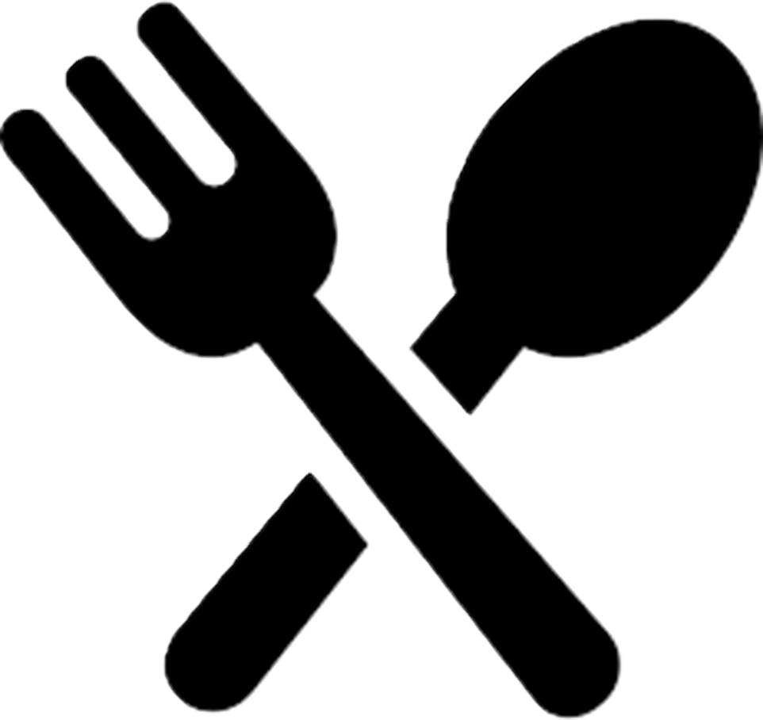

A permanent and upgradable project
Click to read more
Grow your own plant indoors
Click to read more
New cooking station
Cook meals, receive small buffs
Click to read more
Donate your harvest or topside plants
Receive Rewards and Merits
Click to read more
The Green Hand Initiative is a concept gameplay loop focused on adding more purposes towards plants in
general. It adds a peaceful and pleasing layer to your underground life, giving a new purpose to your
extractions and a way to actively lore-friendly support Speranza's survival !
This concept also emphasizes giving projects AN ACTUAL PURPOSE.
Unlock a personal, instanced Greenhouse Project next to your
raider's Den.
This isn't just a prop; it is an interactive project that comes with multiple
upgrades (click on the image to see a preview).
Plants or seeds that you scavenge topside now can be cultivated in your greenhouse:
They grow in real times.
You can only grow 24 plants at a time.
Some plants can be found in special condition or rarely in the seed vault of Stella Montis.

SURVIVAL GASTRONOMY
"A well-fed Raider is a deadly Raider."
Use your harvested crops at the new Cooking Station to prepare meals before or in-raids. They are small
buff items, providing another gameplay purpose for plants. Here are some examples:
Find and harvest Great Mullein.
With the recent shortage of food, Celeste is sponsoring a reward program for raiders who donates their crops.
Celeste heard that raiders are now growing their own plants and has establish a new program: the green hand initiative, a milestone-type system based on your total number of crops donated ! Earn Merits and buffs through her new program, and help rebuilding and reinforcing Speranza.
Hi i'm Gogneau, I initially designed this concept to see how a non-combat loop could fit into ARC Raiders. I know there's 99% chance that my concept will never see the day but i don't care, i'm loving to share some concept of my favorite game with you all !
Read the original Reddit Post